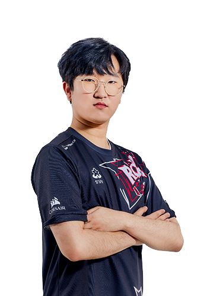
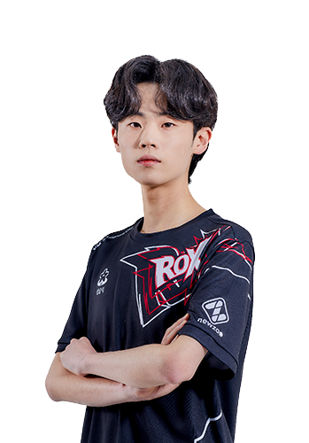

ROX
rox의 멤버로는 이재혁, 송용준, 사상훈, 한승철, 강석인, 신종민이 있다.
이재혁 : SPEED ACE / 송용준 : MIDDLE / 사상훈 : HYBRID / 한승철 : SWEEPER / 강석인 : ITEM ACE / 신종민 : SINGLE
이재혁 : SPEED ACE

이재혁은 2001년 4월 12일생으로 서울에서 태어났으며 176cm, 70kg이다.
20 시즌2에 멋있게 개인전 우승을 가져갔다.
이재혁의 별명은 쿨재혁이 있다.
송용준 : MIDDLE
송용준은 2002년 2월 1일생으로 빠른02이다.
키우는 반려견이 있다. 이름은 구찌이다. 너무 너무 너무 귀엽다
별명으로는 녹용이 있다.
사상훈 : HYBRID
사상훈은 2000년 1월 14일생으로 빠른이지만 족보가 꼬였다고 한다.
한승철 : sweeper

한승철은 2001년 2월 28일생으로 경기도 파주시에서 살고 있다.
우승 : 팀전 1회 우승
강석인 : ITEM ACE
강석인은 1992년 7월 13일생으로 충청남도 당진군에서 태어났다.
강석인은 아이가 있다. 강지한이라고 세상에서 제일 귀여운 애기가 있다.
강석인의 별명은 석트, 제노 등등이 있다.
우승 : 개인전 1회, 팀전 4회 우승
신종민 : SINGLE
신종민은 2000년 10월 4일생으로 서울에서 태어났다.
21시즌1에서는 개인전만 출전한다. 별명으로는 밥종민이 있다.
지금은 군대간 사람 카트계의 아이돌 김응태가 있다.